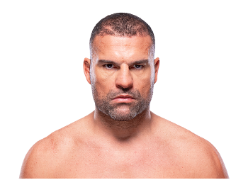

Mauricio “Shogun” Rua es un peleador brasileño de MMA, reconocido por su striking agresivo y estilo ofensivo explosivo. Nació el 25 de noviembre de 1981 en Curitiba, Brasil. Fue campeón de peso semipesado de UFC y figura clave en la historia de las MMA brasileñas.
Shogun se destacó por su potencia, resiliencia y combatividad. Su estilo combina muay thai y jiu-jitsu brasileño, permitiéndole finalizar peleas tanto de pie como en el suelo. Su legado incluye rivalidades históricas y combates memorables contra peleadores de élite, consolidándolo como una leyenda en el octágono.

Otros que podrían interesarte: